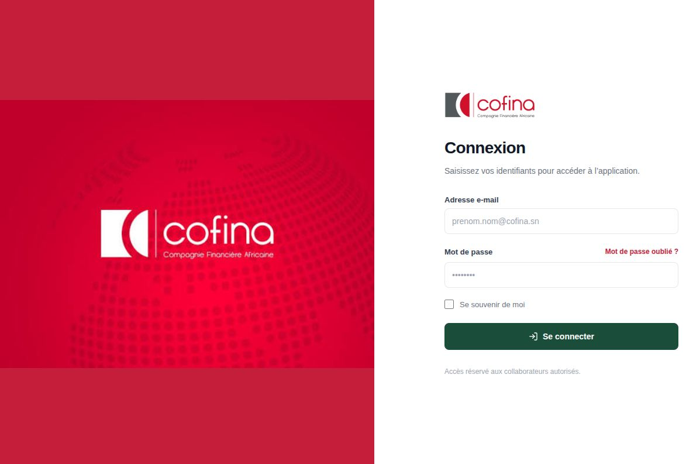
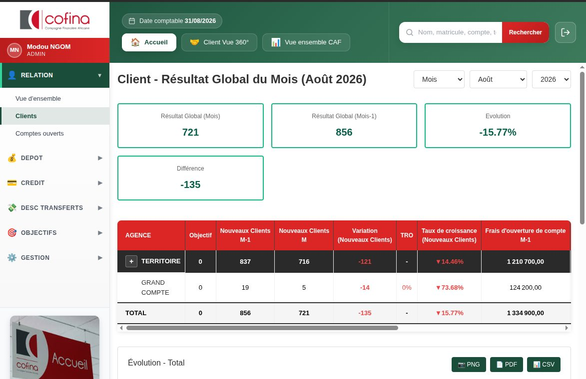
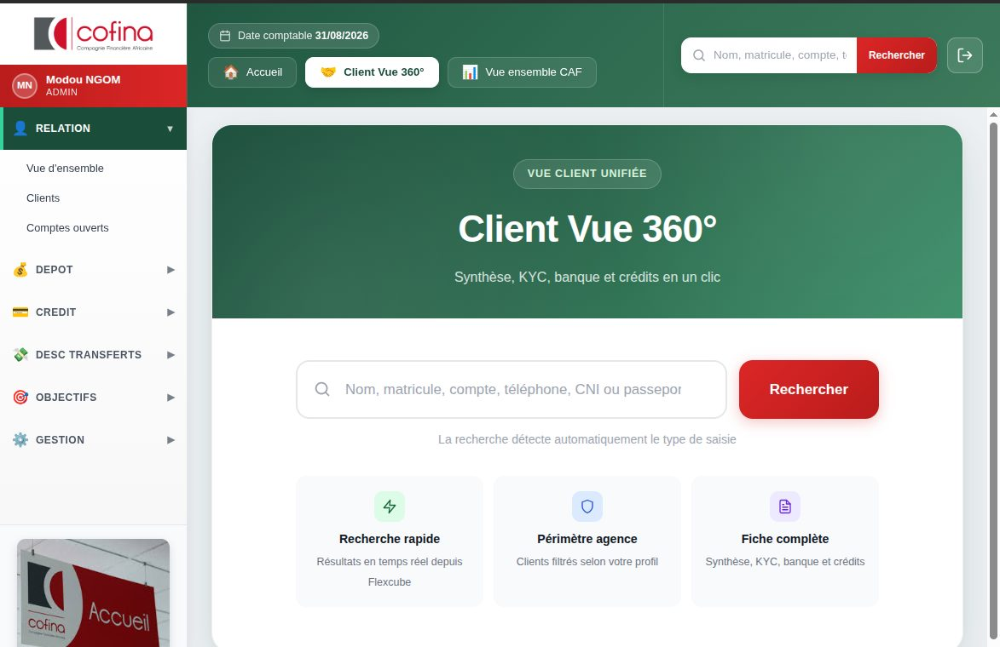
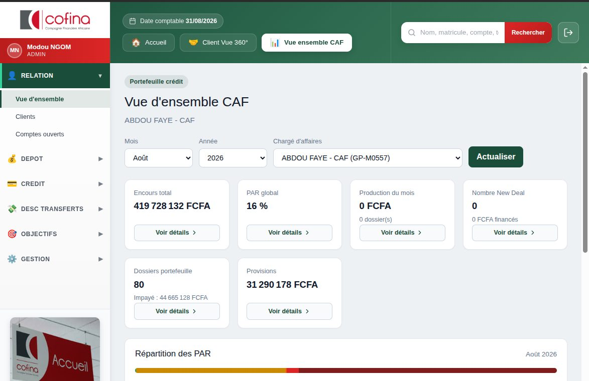

Manuel d’utilisation — à destination du métier
Pour partager : utilisez le fichier PDF manuel-utilisateur.pdf (pas le HTML).
Si vous imprimez depuis le navigateur : Ctrl + P →
décochez En-têtes et pieds de page, cochez Graphiques d’arrière-plan.
CofiDash est le tableau de bord commercial de COFINA. Il permet de suivre la performance (clients, dépôts, crédit, transferts), de consulter un client en vue 360°, et de piloter les objectifs du réseau.
Les données affichées proviennent principalement du système bancaire (Flexcube). Selon l’écran, elles sont à jour en temps réel ou issues d’un snapshot du matin.

En cas d’identifiants incorrects, un message d’erreur s’affiche. Vérifiez l’orthographe de l’e-mail puis réessayez. Utilisez « Mot de passe oublié ? » si besoin.
À la première connexion (compte nouvellement créé), l’application peut vous forcer à changer le mot de passe. Saisissez le mot de passe actuel, puis le nouveau mot de passe deux fois. Tant que ce changement n’est pas fait, vous ne pouvez pas entrer dans le tableau de bord.
En haut à droite, cliquez sur l’icône de déconnexion (flèche sortante). Fermez ensuite la session Windows si vous quittez un poste partagé.
Après connexion, l’écran se compose de trois zones :
| Zone | Rôle |
|---|---|
| Bandeau du haut | Votre nom et profil, date comptable, raccourcis Accueil / Client Vue 360° / Vue ensemble CAF, barre de recherche client, déconnexion. |
| Menu de gauche | Modules métier : Relation, Dépôt, Crédit, Transferts, Objectifs, Gestion. Cliquez sur un titre pour déplier les sous-menus. |
| Zone centrale | Tableaux, indicateurs (KPI) et détails de la section choisie. |

La recherche client du bandeau accepte un nom, un matricule, un n° de compte, un téléphone, une CNI ou un passeport. Appuyez sur Entrée ou cliquez sur « Rechercher ».
Sur la plupart des tableaux, un bouton Actualiser recharge les données de l’écran. Les sélecteurs Semaine / Mois / Année (et le mois / l’année) filtrent la période affichée.
Chaque utilisateur a un profil. Il détermine les menus, le périmètre (toute la filiale, une zone, une agence, son portefeuille) et les actions autorisées sur les objectifs.
| Profil | Rôle principal dans CofiDash |
|---|---|
| Directeur Général (MD) | Consultation du tableau de bord. Valide les objectifs fixés par le DGA. Ne crée pas d’objectifs. |
| Directeur Général Adjoint (DGA) | Fixe les objectifs des territoires / zones. Soumis à validation du MD. |
| Responsable de zone | Fixe les objectifs des agences de sa zone. Soumis à validation du DGA. |
| Chef d’agence | Fixe les objectifs de ses CAF. Soumis à validation du responsable de zone. |
| CAF | Consulte sa vue d’ensemble, son portefeuille, ses objectifs. Ne crée pas d’objectifs. |
| Conseiller client (CC) | Accès principalement à la recherche Client Vue 360°. |
| Finances / Exploitations | Consultation (et, pour Finances, suivi financier selon droits). |
| Administrateur | Tous les menus, gestion des utilisateurs, territoires, agences et profils. |
Les menus exacts peuvent être ajustés par l’administrateur. Le tableau décrit le fonctionnement standard.
La Vue 360° rassemble la fiche d’un client : synthèse, KYC, comptes et crédits. Accès : bandeau Client Vue 360°, ou menu Relation selon le profil. Les résultats sont filtrés selon votre périmètre (agence, zone, portefeuille).

Si aucun résultat n’apparaît, vérifiez l’orthographe ou essayez un identifiant plus précis (matricule, compte, pièce d’identité).
Identité, coordonnées et informations de conformité du dossier, avec le statut du dossier. Les champs sont regroupés par blocs.
Vue globale : encours global, encours sain, encours impayé, total exigible, soft scoring.
Pour chaque prêt de la liste :
Vérifie l’éligibilité au produit PI selon des règles paramétrées. Le verdict s’affiche en vert (éligible) ou en alerte (non éligible), avec le détail des critères. Les administrateurs habilités peuvent paramétrer les règles via le bouton dédié.
Écran d’accueil des CAF. Les autres profils y accèdent via le bandeau Vue ensemble CAF ou le menu Relation → Vue d’ensemble, en choisissant un chargé d’affaires.
Chaque carte a un bouton Voir détails (liste de dossiers, puis fiche d’un prêt).
| Indicateur | Ce qu’il représente |
|---|---|
| Encours total | Encours crédit du portefeuille du CAF sur la période. |
| PAR global | Poids du portefeuille à risque (impayés) dans l’encours. |
| Production du mois | Volume financé et nombre de dossiers du mois. |
| Nombre New Deal | Nouveaux dossiers New Deal vs objectif, avec volume financé. |
| Dossiers portefeuille | Nombre de dossiers et encours impayé associé. |
| Provisions | Montant de provisions du portefeuille. |
Dans le détail d’un prêt : client, n° de prêt, statut, santé (sain / à risque), jours PAR, encours, impayé, montant financé, taux de remboursement, type de prêt.

Les buckets PAR (PAR 0, 30, 90, 180, 360) permettent de zoomer sur les dossiers selon l’ancienneté de l’impayé.
Menu Relation (à gauche).
Suivi des nouveaux clients et des frais d’ouverture de compte, confrontés à l’objectif.
Colonnes utiles : Objectif, Nouveaux clients (N-1 et N), variation, TRO, taux de croissance, frais d’ouverture. L’écran type est celui de la figure 2.
Les couleurs indiquent le sens de la variation (hausse / baisse) et le niveau d’atteinte de l’objectif.
En bas de page, un graphique d’évolution et les exports PNG / PDF / CSV permettent de récupérer le tableau ou le graphe.
Deux vues : Dashboard et Performance. Filtrez par mois et année, puis Actualiser.
Menu Dépôt → Collecte d’épargne à vue. Trois onglets :
| Onglet | Usage |
|---|---|
| Dashboard | Vue synthétique de la collecte vs objectifs. |
| Collecte d’épargne à vue | Tableau territoire → agence → CAF → client. Objectif, réalisation, TRO, écart, total dépôts. |
| Évolution | Suivi dans le temps de la collecte. |
Choisissez le mois et l’année, puis Actualiser. Un filtre « Filtré : … / Tout voir » restreint le tableau à un territoire, une agence ou un CAF après clic dans la hiérarchie.
Les administrateurs disposent de « Recalculer Flexcube » (recalcul long depuis le core) et « Figer objectifs » (geler les objectifs du mois, en principe au 1er du mois). Ces boutons ne concernent pas le métier courant.
Menu Crédit.
Évolution du PAR en %. Période : semaine, mois ou année.
| Onglet | Contenu |
|---|---|
| PAR Agence | PAR par agence (et niveaux territoriaux). |
| PAR CAF | PAR par chargé d’affaires. |
| FLOP 30 | Les 30 situations les plus dégradées. |
| TOP 50 | Les 50 meilleures situations. |
| Entrées PAR 0 / 30 / 90 / 180 / 360 | Nouveaux dossiers entrés dans chaque bucket d’impayé. |
Utilisez ces vues pour le comité risque, le recouvrement et le suivi quotidien des CAF.
Liste des dossiers New Deal : hors clients NAFA et hors clients déjà en prêt. Colonnes : agence, n° de prêt, client, matricule, montant, date, compte, CAF.
Le bandeau affiche le nombre de dossiers et le montant total (sur la liste filtrée).
Menu DESC Transferts → Données.
Changez de service pour comparer les canaux. Les objectifs de transfert, s’ils ont été saisis, alimentent la colonne Objectif et le TRO.
Les objectifs descendent dans le réseau. Chaque niveau fixe le niveau inférieur ; le niveau supérieur valide.
| Qui | Fixe les objectifs de… | Validé par |
|---|---|---|
| DGA | Territoires / zones | Directeur Général (MD) |
| Responsable de zone | Agences de sa zone | DGA |
| Chef d’agence | Ses CAF | Responsable de zone |
| CAF | — | Consulte uniquement « Mes objectifs » |
| MD | — | Valide uniquement, ne crée pas |
Client, Production (nombres et volume), New Deal, Encours crédit, Collecte, Dépôt de garantie, Épargne simple, Épargne projet, Volume DAT. Les types proposés dépendent du profil et du niveau (territoire, agence, CAF).
Menu Objectifs → Ajouter (profils habilités, hors CAF et hors MD).
Un message confirme la création. Corrigez les champs obligatoires s’il reste des erreurs de saisie (valeurs positives, période complète).
Menu Objectifs → Valider.
Tant qu’un objectif n’est pas validé, il n’est en principe pas pris comme référence de TRO dans les tableaux de performance.
Menu Objectifs → Mes objectifs, ou l’écran dédié du CAF. Filtrez mois et année. Tableau : type, nombres, volume / valeur, période, statut (Validé, En attente, Brouillon, Rejeté).
Ce sont les objectifs fixés par le chef d’agence. Le CAF ne les modifie pas.
Menu Gestion — réservé aux administrateurs.
Onglets Territoires, Agences, Utilisateurs, Profils.
À la création d’un utilisateur, un mot de passe temporaire est attribué ; l’utilisateur devra souvent le changer à la première connexion.
Liste des environnements (ex. filiales ou contextes) et accès aux agences associées. Usage interne / paramétrage, pas le quotidien du réseau.
| Terme | Définition dans CofiDash |
|---|---|
| CAF | Chargé d’affaires. Suit un portefeuille de clients et de crédits. |
| TRO | Taux de réalisation de l’objectif (réalisé / objectif), en %. |
| PAR | Portefeuille à risque : crédits avec impayés, classés par ancienneté (0, 30, 90, 180, 360 jours). |
| YTD | Year to date : cumul depuis le 1er janvier jusqu’à la date (ou au mois) sélectionné. |
| New Deal | Nouvelle mise en force, hors NAFA et hors client déjà en prêt. |
| Encours | Capital (et composantes associées) restant dû sur les crédits. |
| Exigible | Montant arrivé à échéance et dû par le client. |
| KYC | Know Your Customer : informations d’identité et de conformité du client. |
| TA | Tableau d’amortissement du prêt (échéancier). |
| PI | Produit concerné par le contrôle d’éligibilité Checking-PI. |
| Date comptable | Date du jour affichée dans le bandeau (repère de session, pas un filtre de données). |
| Snapshot | Photographie des données (souvent le matin). « Actualiser » relit ce snapshot ; un recalcul Flexcube le régénère. |
Votre profil ne l’inclut pas. Demandez à l’administrateur d’ajouter le droit, ou de vérifier le bon profil sur votre compte.
Le périmètre est limité à votre zone, agence ou portefeuille. Un CAF ne voit pas les clients d’un autre CAF. Essayez un identifiant exact (matricule, compte, pièce).
Il est probablement encore en attente de validation, rejeté, ou saisi sur une autre période / un autre type. Ouvrez Valider ou Mes objectifs et contrôlez le statut et le mois.
Utilisez « Mot de passe oublié ? ». Si le compte est inactif ou sans profil, contactez l’administrateur CofiDash (pas le support Flexcube).
Attendez quelques secondes (certains extraits Oracle sont longs). Si cela persiste, actualisez le navigateur (F5), déconnectez-vous puis reconnectez-vous. Signalez l’écran et l’heure à l’informatique si le problème continue.